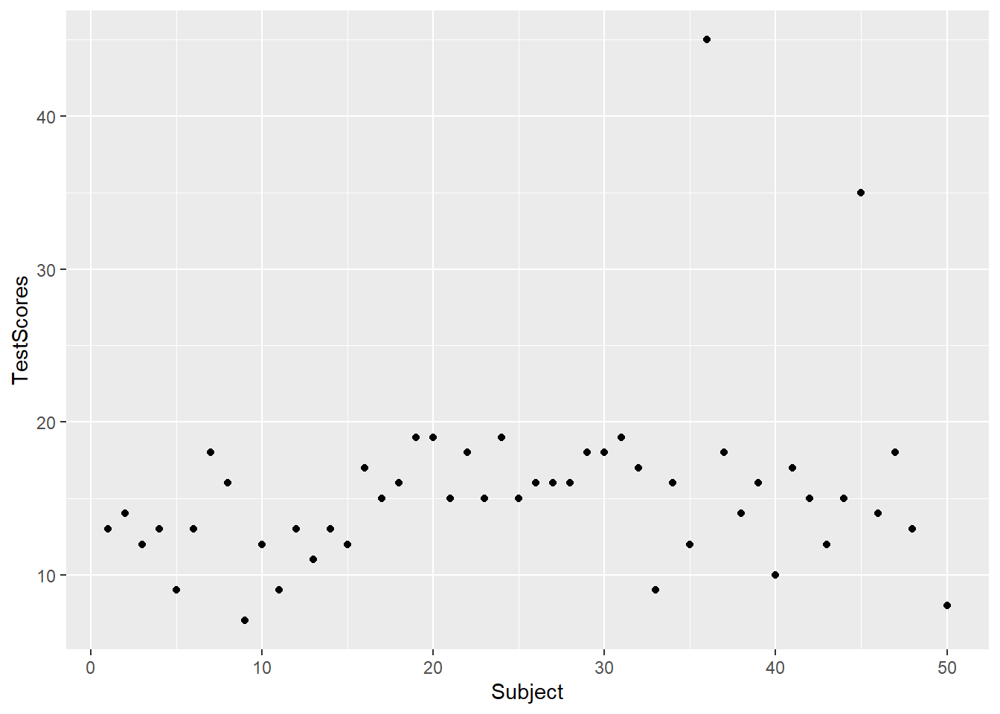
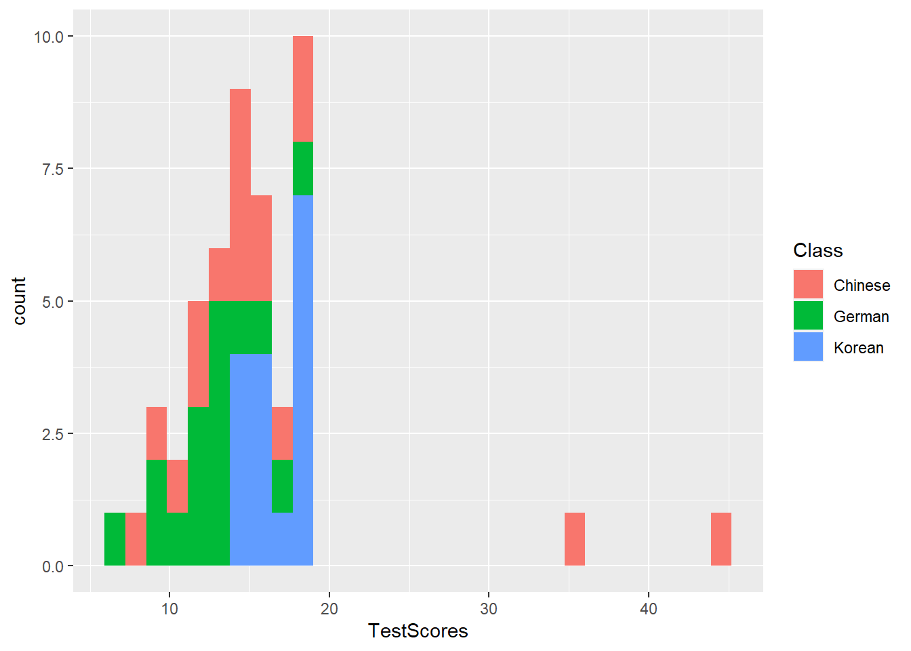
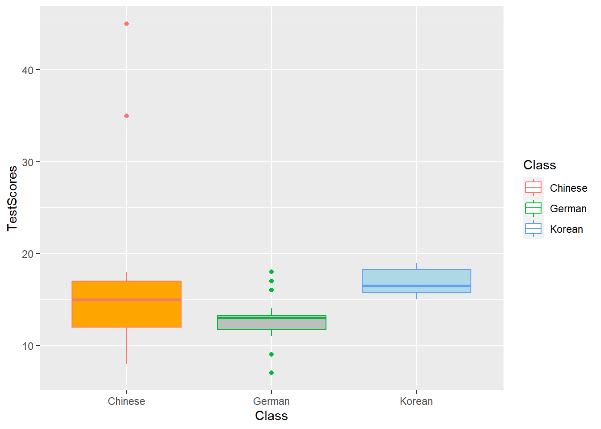
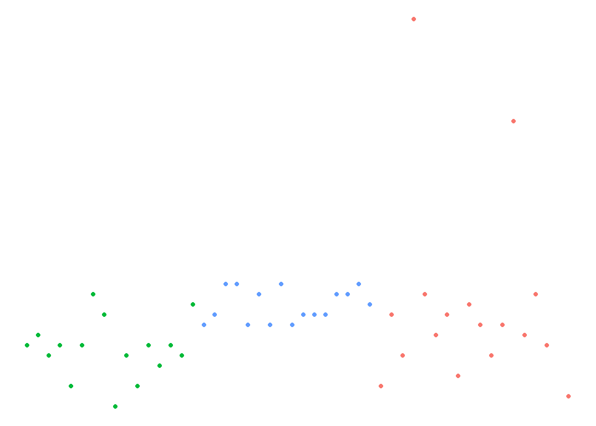

Week 7 Introduction to Data Visualization
This week, we focus on data visualization. And the aim of this week is to discuss some basic principles of data visualization as well as showcasing how to visualize data using R.
We have already encountered data visualization in week 4 when we visualized scores form different language classes. In that session, we used the plot function to visualize the data as a scatter plot (as shown below).
library(here)
dat <- read.delim(here("data", "week4data1.txt"), sep = "\t")
plot(dat$TestScores,
col = factor(dat$Class))Today, we will go beyond the plot function and us the ggplot function instead.
To be able to generate ggplot plots, you need to install and load the ggplot package. We also install and load the vip and dplyr packages.
# install packages
#install.packages("ggplot2")
#install.packages("vip")
#install.packages("dplyr")
# load packages
library(ggplot2)
library(vip)
library(dplyr)7.1 The ggplot framework
The philosophy of ggplot2 is to consider graphics as consisting out of elements called aesthetics (which include, e.g., the dataset to be plotted and the axes) and layers called geometrics containing information (e.g., points or lines).
The underlying principle is that a visualization is build up by adding layers as shown below.
Thus, ggplots typically start with the function call (ggplot) followed by the specification of the data, then the aesthetics (aes), and then a specification of the type of plot that is created (geom_line for line graphs, geom_box for box plots, geom_bar for bar graphs, geom_text for text, etc.).
ggplot(data, aes(x, y)) + geom_point()
The nice thing about ggplots is that they allow to specify all elements that the graph consists of (e.g. colors, symbols, text, themes, axes, labels, etc.).
Let’s see how this works in practice and visualize the week 4 dataset.
library(ggplot2)
ggplot(dat, aes(x = Subject, y = TestScores, color = Class)) +
geom_point()As the ggplot framework has become the dominant way to create visualizations in R, we will only focus on this framework in the following practical examples.
But before we plot data, let us think about some basic principles of data visualization.
7.2 Basic principles of data vis
On a very general level, graphs should be used to inform the reader about properties and relationships between variables. This implies that…
- graphs, including axes, must be labeled properly to allow the reader to understand the visualization correctly and with ease.
- there should not be more dimensions in the visualization than there are in the data (unless it helps the reader to better understand or more easily interpret information shown by the visualization).
- all elements within a graph should be unambiguous.
- variable scales should be portrayed accurately (for instance, lines - which imply continuity - should not be used for categorically scaled variables).
- graphs should be as intuitive as possible and should not mislead the reader.
7.3 Creating a simple graph
When creating a visualization with ggplot, we first use the function ggplot and define the data that the visualization will use, then, we define the aesthetics which define the layout, i.e. the x- and y-axes.
ggplot(dat, aes(x = Subject, y = TestScores))
In a next step, we add the geom-layer which defines the type of visualization that we want to display. In this case, we use geom_point as we want to show points that stand for the test scores for each subject. Note that we add the geom-layer by adding a + at the end of the line!
ggplot(dat, aes(x = Subject, y = TestScores)) +
geom_point()
We can also add another layer, e.g. a layer which shows a smoothed loess line, and we can change the theme by specifying the theme we want to use. Here, we will use theme_bw which stands for the black-and-white theme (we will get into the different types of themes later).
ggplot(dat, aes(x = Subject, y = TestScores)) +
geom_point() +
geom_smooth() +
theme_bw()# save plot
ggsave(here("images", "myplot.png"))To save a plot, we use the ggsave function after the plot as used above.
And we can store plots in objects.
ggplot(dat, aes(x = Subject, y = TestScores)) +
geom_point() +
theme_bw() -> pTo change the range of the axes, we can specify their limits in the coord_cartesian layer.
p + coord_cartesian(xlim = c(0, 55), ylim = c(0, 50))We can also integrate plots into data processing pipelines as shown below. When you integrate visualizations into pipelines, you should not specify the data as it is clear from the pipe which data the plot is using.
dat %>%
group_by(Class) %>%
dplyr::summarise(Score = mean(TestScores)) %>%
ggplot(aes(x = Class, y = Score,
fill = Class)) +
geom_bar(stat = "identity")
7.4 Modifying axes and titles
There are different way to modify axes, the easiest way is to specify the axes labels using labs (as already shown above). To add a custom title, we can use ggtitle.
p + labs(x = "Student", y = "Test Score (out of 50)") +
ggtitle("Test results of students in language classes", subtitle="The students performed really badly!")To change the range of the axes, we can specify their limits in the coord_cartesian layer.
p + coord_cartesian(xlim = c(0, 55), ylim = c(0, 50))
7.5 Line Graphs
Line graphs are used when we have numeric values that are linked in one way or another, e.g., because they display a time series (in our case we should actually not use a line graph but we do it to exemplify how it is done).
It is important that there is only one value per x-axis level for each line!
In addition, we use the facet_wrap function with the nrow argument to show the plots in 3 rows (instead of next to each other).
dat %>%
ggplot(aes(x = Subject, y = TestScores, color = Class)) +
# add geom layer with lines
geom_line() +
facet_wrap(~Class, nrow = 3)
7.6 Histograms
Histograms summarize numeric variables by showing their distribution across bins.
Using ggplot, we specify the variable we want to summarize in the aesthetics and use the geom_histogram function to generate a histogram. And we can simply add information about a second variable by specifying this variable as the basis for the coloring of the bars (which we do by specify the fill argument).
ggplot(dat, aes(TestScores, fill = Class)) +
geom_histogram()
7.7 Bar plots
The creation of barplots in ggplot works just like other types of visualizations in this framework. We first define the data and the aesthetics and then use the geom_bar to create a barplot.
In the case of barplots, it is important that we only have 1 value per class so we first summarize the data before plotting it.
# bar plot
dat %>%
dplyr::group_by(Class) %>%
dplyr::summarise(Score = mean(TestScores)) %>%
ggplot(aes(x = reorder(Class, Score), y = Score, fill = Class)) +
geom_bar(stat="identity") +
theme_bw() +
# add and define text
geom_text(aes(y = Score-2, label = round(Score, 1)), color = "white", size=5) +
# add colors
scale_fill_manual(values = c("gray", "orange", "lightblue")) +
# suppress legend
theme(legend.position="none")
Compared with the pie chart, it is much easier to grasp the relative size and order of the percentage values which shows that pie charts are unfit to show relationships between elements in a graph and, as a general rule of thumb, should be avoided.
7.8 Boxplots
So far, we have plotted values but we have not plotted the underlying distributions. For instance, we have plotted mean values but not the variance within the distribution. One handy way to combine plotting general trends and their underlying distributions are boxplots.
Boxplots, or Box-and-Whisker Plots, are exploratory graphics first created by John W. Tukey and they show the relationships between categorical and numeric variables. They are very useful because they not only provide measures of central tendency (the median which is the line in the middle of the box) but they also offer information about the distribution of the data. To elaborate, fifty percent of data points fall within the box while seventy-five percent of data points fall within the whiskers (the lines which look like extended error bars): the box thus encompasses the interquartile range between the first and third quartile. The whiskers show the minimum and maximum values in the data and only outliers (data points that lie 1.5 times the interquartile range or more above the third quartile or 1.5 times the interquartile range or more below the first quartile. If the whiskers differ in length, then this means that the data is asymmetrically distributed.
# create boxplot
ggplot(dat, aes(Class, TestScores, color = Class)) +
geom_boxplot(fill=c("orange", "gray", "lightblue")) 
7.9 Modifying symbols and adding text
To change the symbols that the plotted, we modify the shape argument.
ggplot(dat, aes(x = Subject, y = TestScores, shape = Class, color = Class)) +
geom_point() Text can be added by adding a text layer.
dat %>%
ggplot(aes(x = Subject, y = TestScores, label = TestScores, color = Class)) +
geom_text(size = 3) +
theme_bw()Or, we can use the annotate layer.
ggplot(dat, aes(x = Subject, y = TestScores)) +
geom_point() +
ggplot2::annotate(geom = "text", label = "Some text", x = 10, y = 25, color = "orange") +
ggplot2::annotate(geom = "text", label = "More text", x = 200, y = 35, color = "lightblue", size = 8) +
theme_bw()Text is also useful when generating bar plots to indicate the values for different columns.
dat %>%
dplyr::group_by(Class) %>%
dplyr::summarise(Score = round(mean(TestScores), 1)) %>%
ggplot(aes(x = Class, y = Score, label = Score)) +
geom_bar(stat="identity") +
geom_text(vjust=-1.6, color = "black") +
coord_cartesian(ylim = c(0, 50)) +
theme_bw()To show multiple plots in one window, we can create facet grids (here we want to have separate plots for each Class).
ggplot(dat, aes(x = Subject, y = TestScores)) +
facet_grid(~Class) +
geom_point() +
theme_bw()7.10 Modifying themes and legends
To change the legend position, we specify the legend.position in the theme layer.
ggplot(dat, aes(x = Subject, y = TestScores, color = Class)) +
geom_point() +
# use black-and-white theme
theme_bw() +
theme(legend.position = "top")
We can remove legends by specifying the position as none.
ggplot(dat, aes(x = Subject, y = TestScores, color = Class)) +
geom_point() +
# use void theme
theme_void() +
theme(legend.position = "none")